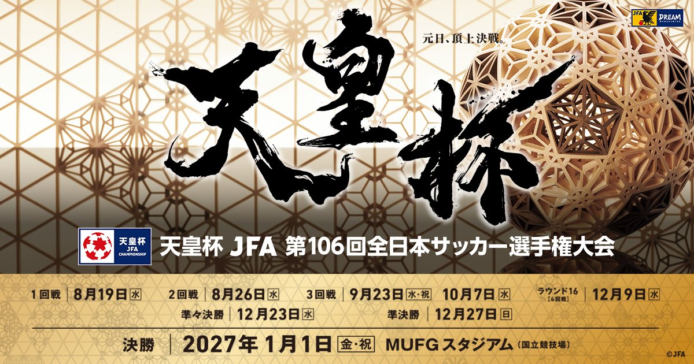
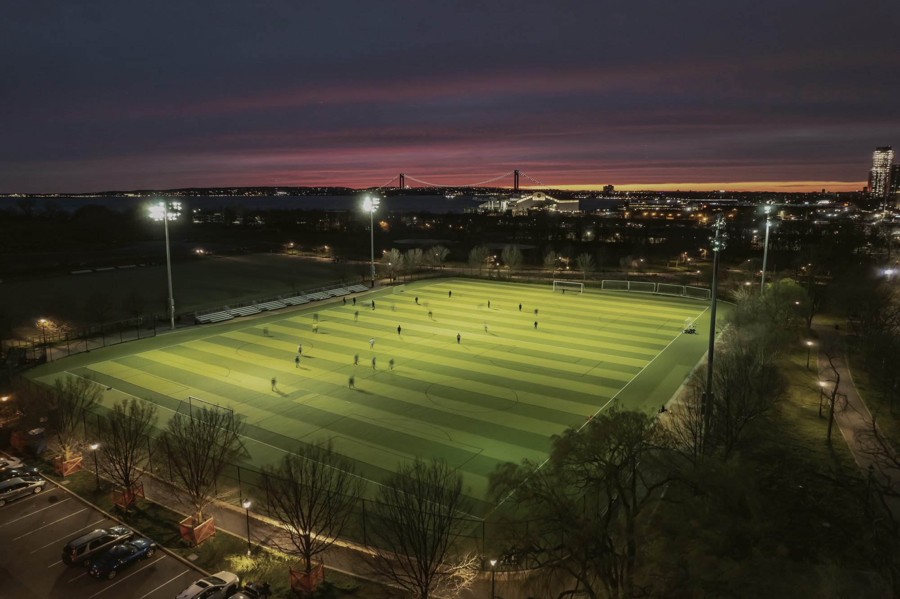

ROUND 11回戦終了
長野県代表（右側ベンチ）AC長野パルセイロ
左側ベンチ福井ユナイテッドFC
- 開催日
- 2026.08.19 水曜日
- キックオフ
- 19:00
- 会場
- サンプロ アルウィン（松本平広域公園総合球技場／長野県松本市神林5300）
試合結果・2回戦以降の日程は、JFA 大会公式サイトでご確認ください。
長野県サッカー協会は、天皇杯の長野県開催試合を運営しています。試合情報、チケット、ご来場いただく皆様へのご案内を掲載しています。

試合結果・2回戦以降の日程は、JFA 大会公式サイトでご確認ください。
一般販売は 8月1日（土）10:00 より各プレイガイドで販売しました。JFA加盟登録者の方は、特別割引価格で協会事務局からお申し込みいただけます。
| 席種 | 券種 | 前売 | 当日（オンライン） | 当日（会場） |
|---|---|---|---|---|
| C席（メインスタンド）エリア内自由 | — | ¥2,000 | ¥2,500 | ¥3,000 |
| バックスタンドエリア内自由 | 一般 | ¥1,500 | ¥1,800 | ¥2,000 |
| 高校 | ¥800 | ¥1,000 | ¥1,000 | |
| 小中 | ¥500 | ¥700 | ¥1,000 | |
| ゴール裏・ベンチ右側長野県代表／エリア内自由 | 一般 | ¥1,500 | ¥1,800 | ¥2,000 |
| 高校 | ¥800 | ¥1,000 | ¥1,000 | |
| 小中 | ¥500 | ¥700 | ¥1,000 | |
| ゴール裏・ベンチ左側福井ユナイテッド／エリア内自由 | 一般 | ¥1,500 | ¥1,800 | ¥2,000 |
| 高校 | ¥800 | ¥1,000 | ¥1,000 | |
| 小中 | ¥500 | ¥700 | ¥1,000 | |
| 有料駐車券（ふれあい広場） | 1台 | ¥2,500 | 販売なし | |
チケットに関するお問い合わせ
ハローダイヤル 050-5541-8600（9:00〜20:00、年中無休）
登録チームの選手・監督、審判員、インストラクター、公認指導者の皆様に、前売入場券を特別割引価格で販売します。
購入枚数の上限：登録チームはチーム登録者数まで、審判員・指導者は1枚まで。
申込・入金締切：7月29日（水）15:00 必着

ご来場いただく皆様に、安全で快適にご観戦いただくため、「ご来場いただくファン・サポーターの皆様へ」をご覧いただき、ご協力をお願いいたします。
| 大会 | 資料・お知らせ |
|---|---|
| 第105回2025 | |
| 第104回2024 | |
| 第103回2023 | |
| 第102回2022 | |
| 第101回2021 | |
| 第99回2019 | |
| 第97回2017 |
（一社）長野県サッカー協会 TEL 0263-87-8565／info@nagano-fa.or.jp
チケットのお問い合わせはハローダイヤル 050-5541-8600 へ